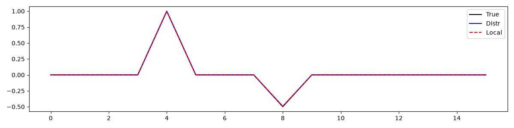
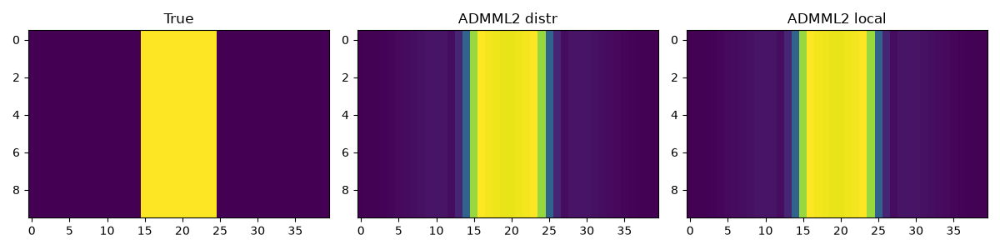

Note
Go to the end to download the full example code.
Proximal solvers#
This example demonstrates the use of the solvers in the
pylops_mpi.proximal.optimization module.
import numpy as np
from mpi4py import MPI
from matplotlib import pyplot as plt
import pylops
import pyproximal
import pylops_mpi
plt.close("all")
comm = MPI.COMM_WORLD
rank = comm.Get_rank()
size = comm.Get_size()
np.random.seed(rank)
Let’s start with an example of sparsity promoting inversion using the
pylops_mpi.proximal.optimization.primal.ProximalGradient solver.
Here for illustrative purposes, we consider a case where the model is
broadcasted whilst the data is scattered across ranks.
# Sparse input
n = 16
arr = pylops_mpi.DistributedArray(
global_shape=n,
partition=pylops_mpi.Partition.BROADCAST)
arr[:] = 0.0
arr[n // 4] = 1.0
arr[n // 2] = -0.5
# Operator and data
A = np.random.normal(0, 1, (n // size, n,))
Opd = pylops_mpi.MPIVStack([pylops.MatrixMult(A), ])
b = Opd @ arr
blocal = b.asarray()
# L2 prox
l2d = pylops_mpi.proximal.MPIL2(
Op=Opd, b=b, x0=arr.zeros_like())
# L1 prox
l1 = pyproximal.L1(sigma=1e-1)
l1d = pylops_mpi.proximal.MPIProxOperator(l1)
# Distributed inversion
arrpg = pylops_mpi.proximal.optimization.primal.ProximalGradient(
l2d, l1d, x0=arr.zeros_like(), tau=1e-2, niter=400,
show=True,
)
arrpgdlocal = arrpg.asarray()
# Benchmark serial inversion
As = np.vstack(comm.allgather(A))
arrlocal = arr.asarray()
if rank == 0:
Op = pylops.MatrixMult(As)
l2local = pyproximal.L2(
Op=Op, b=blocal)
l1local = pyproximal.L1(sigma=1e-1)
arrpglocal = pyproximal.optimization.primal.ProximalGradient(
l2local, l1local, x0=np.zeros(n), tau=1e-2, niter=400, show=False
)
plt.figure(figsize=(12, 3))
plt.plot(arrlocal, "k", label="True")
plt.plot(arrpgdlocal, "b", label="Distr")
plt.plot(arrpglocal, "--r", label="Local")
plt.legend()
plt.tight_layout()

Accelerated Proximal Gradient
---------------------------------------------------------
Proximal operator (f): <MPIL2>
Proximal operator (g): <MPIProxOperator (L1)>
tau = 0.01 epsg = 1.0
niter = 400 tol = None
niterback = 100 acceleration = None
Itn x[0] f g J=f+eps*g tau
1 -6.78097e-02 6.335e+00 1.141e-01 6.449e+00 1.000e-02
2 -9.61259e-02 2.353e+00 1.728e-01 2.525e+00 1.000e-02
3 -1.04538e-01 1.098e+00 2.055e-01 1.304e+00 1.000e-02
4 -1.03219e-01 6.350e-01 2.234e-01 8.584e-01 1.000e-02
5 -9.74574e-02 4.286e-01 2.333e-01 6.618e-01 1.000e-02
6 -8.99726e-02 3.194e-01 2.386e-01 5.580e-01 1.000e-02
7 -8.21326e-02 2.537e-01 2.413e-01 4.950e-01 1.000e-02
8 -7.45942e-02 2.104e-01 2.424e-01 4.529e-01 1.000e-02
9 -6.76431e-02 1.801e-01 2.426e-01 4.227e-01 1.000e-02
10 -6.13744e-02 1.576e-01 2.421e-01 3.998e-01 1.000e-02
41 -6.78370e-03 2.917e-02 2.051e-01 2.343e-01 1.000e-02
81 0.00000e+00 9.089e-03 1.783e-01 1.874e-01 1.000e-02
121 0.00000e+00 3.136e-03 1.590e-01 1.621e-01 1.000e-02
161 -0.00000e+00 5.092e-04 1.495e-01 1.500e-01 1.000e-02
201 -0.00000e+00 3.358e-04 1.493e-01 1.496e-01 1.000e-02
241 -0.00000e+00 3.580e-04 1.493e-01 1.496e-01 1.000e-02
281 -0.00000e+00 3.604e-04 1.493e-01 1.496e-01 1.000e-02
321 -0.00000e+00 3.606e-04 1.493e-01 1.496e-01 1.000e-02
361 -0.00000e+00 3.606e-04 1.493e-01 1.496e-01 1.000e-02
392 -0.00000e+00 3.606e-04 1.493e-01 1.496e-01 1.000e-02
393 -0.00000e+00 3.606e-04 1.493e-01 1.496e-01 1.000e-02
394 -0.00000e+00 3.606e-04 1.493e-01 1.496e-01 1.000e-02
395 -0.00000e+00 3.606e-04 1.493e-01 1.496e-01 1.000e-02
396 -0.00000e+00 3.606e-04 1.493e-01 1.496e-01 1.000e-02
397 -0.00000e+00 3.606e-04 1.493e-01 1.496e-01 1.000e-02
398 -0.00000e+00 3.606e-04 1.493e-01 1.496e-01 1.000e-02
399 -0.00000e+00 3.606e-04 1.493e-01 1.496e-01 1.000e-02
400 -0.00000e+00 3.606e-04 1.493e-01 1.496e-01 1.000e-02
Total time (s) = 0.23
---------------------------------------------------------
Next we use the pylops_mpi.proximal.optimization.primal.ADMML2
solver for a similar problem. However we consider here a 2d array and impose
blockiness in the solution. Once again, the model is broadcasted,
whilst the data is scattered.
# Input
ny, nx = 10 * size, 40
arrlocal = np.zeros((ny, nx))
arrlocal[ny // 2 - 5:ny // 2 + 5, nx // 2 - 5:nx // 2 + 5] = 2
arr = pylops_mpi.DistributedArray(
global_shape=ny * nx,
partition=pylops_mpi.Partition.BROADCAST
)
arr[:] = arrlocal.flatten()
# Operator and data
Op = pylops.VStack([pylops.Diagonal(np.ones(ny * nx)) for _ in range(size)])
Opd = pylops_mpi.MPIVStack([pylops.Diagonal(np.ones(ny * nx)),])
b = Opd @ arr
blocal = b.asarray()
# Regularizer
Gopd = pylops_mpi.MPILinearOperator(pylops.Gradient(
dims=(ny, nx), sampling=1., edge=False, kind="forward"))
l1 = pyproximal.L1(sigma=2e0)
l1d = pylops_mpi.proximal.MPIProxOperator(l1)
# Distributed inversion
L = 8.0 # max eig of Gopd.H @ Gop
x0distr = arr.zeros_like()
arradmm = pylops_mpi.proximal.optimization.primal.ADMML2(
l1d, Opd, b, Gopd, x0=x0distr, tau=.99 / L, niter=5,
show=True, kwargs_solver=dict(niter=5),
)[0]
arradmmdlocal = arradmm.asarray()
# Benchmark serial inversion
arrlocal = arr.asarray()
if rank == 0:
Gop = pylops.Gradient(
dims=(ny, nx), sampling=1., edge=False, kind="forward",
)
l1local = pyproximal.L1(sigma=2e0)
arradmmlocal = pyproximal.optimization.primal.ADMML2(
l1local, Op, blocal, Gop, x0=np.zeros(ny * nx),
tau=.99 / L, niter=5, show=False, iter_lim=5,
)[0]
fig, axs = plt.subplots(1, 3, figsize=(12, 3))
axs[0].imshow(arrlocal.reshape(10 * size, 40))
axs[0].set_title("True")
axs[0].axis("tight")
axs[1].imshow(arradmmdlocal.reshape(10 * size, 40))
axs[1].set_title("ADMML2 distr")
axs[1].axis("tight")
axs[2].imshow(arradmmlocal.reshape(10 * size, 40))
axs[2].set_title("ADMML2 local")
axs[2].axis("tight")
fig.tight_layout()

ADMM
---------------------------------------------------------
Proximal operator (g): <MPIProxOperator (L1)>
tau = 1.237500e-01 niter = 5
Itn x[0] f g J = f + g
1 0.00000e+00 2.658e+01 6.862e+01 9.520e+01
2 0.00000e+00 4.653e+01 5.350e+01 1.000e+02
3 0.00000e+00 3.575e+01 5.484e+01 9.058e+01
4 6.54288e-02 2.735e+01 5.783e+01 8.518e+01
5 1.08365e-01 2.254e+01 6.021e+01 8.274e+01
Total time (s) = 0.04
---------------------------------------------------------
And finally we repeat the same with a scattered model.
# Input
ny, nx = 10 * size, 40
arrlocal = np.zeros((ny, nx))
arrlocal[ny // 2 - 5:ny // 2 + 5, nx // 2 - 5:nx // 2 + 5] = 2
arr = pylops_mpi.DistributedArray(global_shape=ny * nx,
partition=pylops_mpi.Partition.SCATTER)
arr[:] = arrlocal[ny // size * rank: ny // size * (rank + 1)].flatten()
# Operator and data
Op = pylops.Diagonal(np.ones(ny * nx))
Opd = pylops_mpi.MPIBlockDiag([pylops.Diagonal(np.ones((ny * nx) // size)),])
b = Opd @ arr
blocal = b.asarray()
# Regularizer
Gopd = pylops_mpi.MPIGradient(
dims=(ny, nx), sampling=1., edge=False, kind="forward")
l1 = pyproximal.L1(sigma=2e0)
l1d = pylops_mpi.proximal.MPIProxOperator(l1)
# Distributed inversion
L = 8.0 # max eig of Gopd.H @ Gop
x0distr = arr.zeros_like()
arradmm = pylops_mpi.proximal.optimization.primal.ADMML2(
l1d, Opd, b, Gopd, x0=x0distr, tau=.99 / L, niter=5,
show=True, kwargs_solver=dict(niter=5),
)[0]
arradmmdlocal = arradmm.asarray()
# Benchmark serial inversion
arrlocal = arr.asarray()
if rank == 0:
Gop = pylops.Gradient(
dims=(ny, nx), sampling=1., edge=False, kind="forward"
)
l1local = pyproximal.L1(sigma=2e0)
arradmmlocal = pyproximal.optimization.primal.ADMML2(
l1local, Op, blocal, Gop, x0=np.zeros(ny * nx),
tau=.99 / L, niter=5, show=False, iter_lim=5,
)[0]
fig, axs = plt.subplots(1, 3, figsize=(12, 3))
axs[0].imshow(arrlocal.reshape(10 * size, 40))
axs[0].set_title("True")
axs[0].axis("tight")
axs[1].imshow(arradmmdlocal.reshape(10 * size, 40))
axs[1].set_title("ADMML2 distr")
axs[1].axis("tight")
axs[2].imshow(arradmmlocal.reshape(10 * size, 40))
axs[2].set_title("ADMML2 local")
axs[2].axis("tight")
fig.tight_layout()

ADMM
---------------------------------------------------------
Proximal operator (g): <MPIProxOperator (L1)>
tau = 1.237500e-01 niter = 5
Itn x[0] f g J = f + g
1 0.00000e+00 2.658e+01 6.862e+01 9.520e+01
2 0.00000e+00 4.653e+01 5.350e+01 1.000e+02
3 0.00000e+00 3.575e+01 5.484e+01 9.058e+01
4 6.54288e-02 2.735e+01 5.783e+01 8.518e+01
5 1.08365e-01 2.254e+01 6.021e+01 8.274e+01
Total time (s) = 0.11
---------------------------------------------------------
Total running time of the script: (0 minutes 0.803 seconds)